Formación técnica orientada al ambiente de trabajo profesional, crecimiento lógico, programación y administración de sistemas tecnológicos.
El Bachillerato en Informática del Instituto Profesional y Técnico Don Bosco prepara a los estudiantes para integrarse de manera competente al mundo de las tecnologías de la información. A lo largo del bachiller, los alumnos adquieren fundamentos sólidos en programación, redes, sistemas operativos y desarrollo web, aplicados a entornos reales de trabajo.
El plan de estudios combina formación académica general con especialización técnica, permitiendo al egresado continuar estudios superiores o incorporarse al mercado laboral con habilidades concretas y actualizadas.
La formación práctica es un eje central del programa: los estudiantes trabajan con equipos reales, software profesional y proyectos aplicados que simulan situaciones del entorno laboral en el área de tecnología.
A continuación se detallan las asignaturas técnicas que conforman el plan de estudios del Bachillerato en Informática.
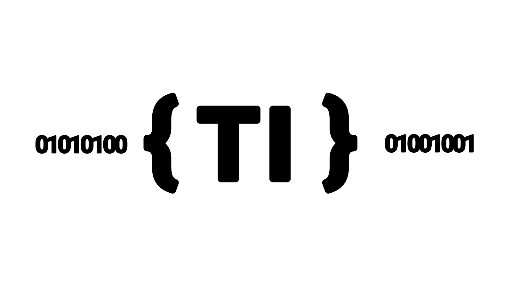
Esta asignatura introduce al estudiante en los fundamentos de los sistemas de información, el manejo responsable de datos y el uso de herramientas tecnológicas en el contexto académico y profesional. Establece la base conceptual para todas las materias técnicas del bachillerato.
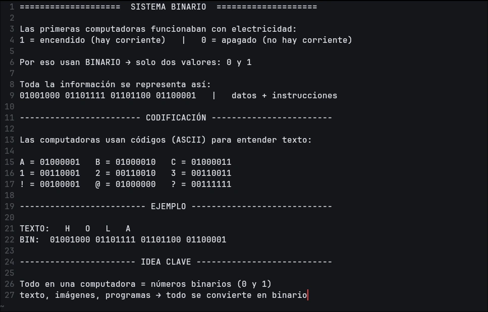
La materia de TI te ayudará a comprender desde las bases del hardware, el funcionamiento principal de las máquinas y el comienzo del lenguaje de programación con el binario.
Capacita al estudiante para instalar, configurar y administrar sistemas operativos en equipos de cómputo individuales y en red, tanto en entornos Windows como Linux. Se desarrollan habilidades técnicas fundamentales para la gestión de recursos y la seguridad de los sistemas.
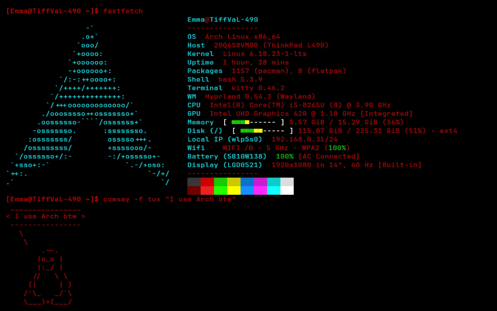
En Sistemas Operativos aprenderás a instalar y configurar Sistemas Windows y GNU/Linux, gestionar usuarios y permisos, antivirus, y las bases de la virtualidad.
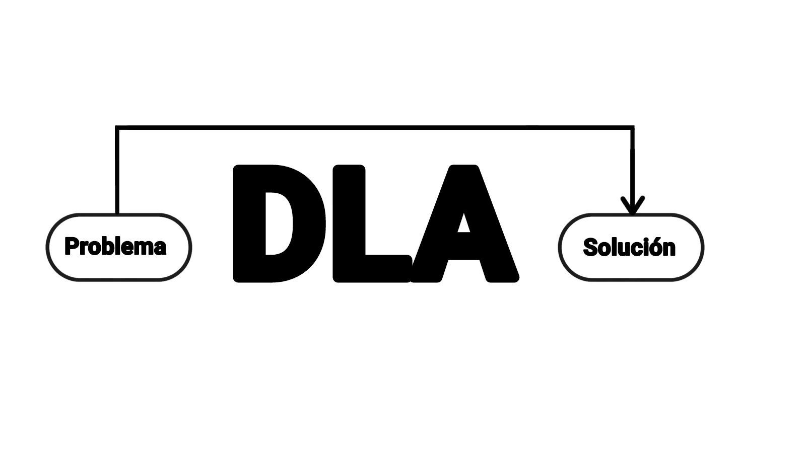
Desarrolla el pensamiento lógico y la capacidad de resolver problemas de manera estructurada mediante el diseño de algoritmos, diagramas de flujo y pseudocódigo. Constituye la base conceptual sobre la que se apoya toda la formación posterior en programación y sistemas.
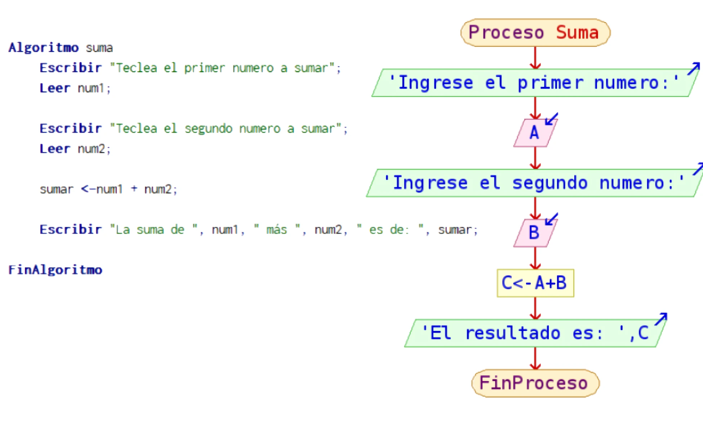
Esta materia te enseñará a pensar de forma estructurada, ademas de los pseudocodigos, diagramas de flujo o pruebas de escritorio, aprenderas las bases más importantes de la programacion.
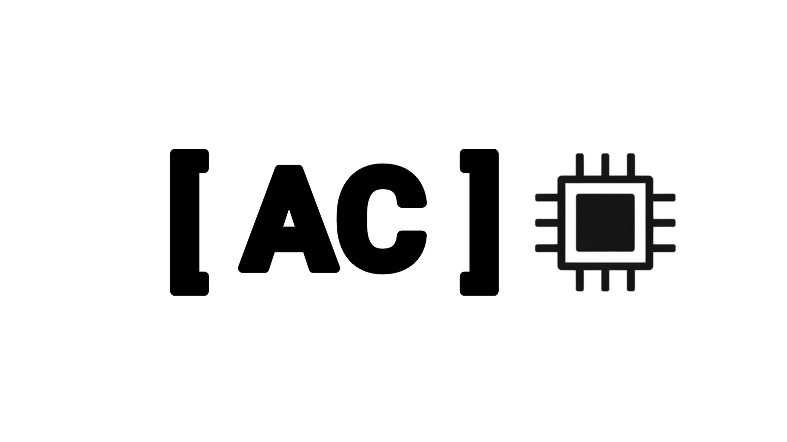
Estudia la estructura interna de los equipos de cómputo, sus componentes físicos y la interacción entre hardware y software. Se hace énfasis en el mantenimiento preventivo y correctivo de equipos, así como en el diagnóstico técnico de fallas comunes.
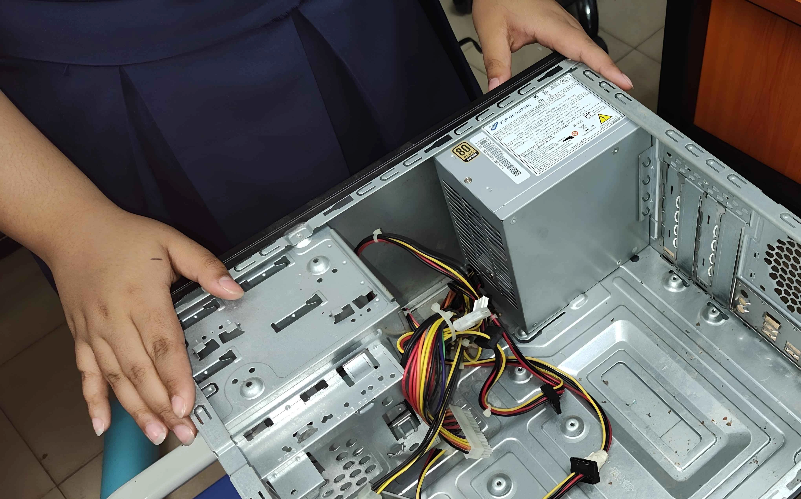
En Arquitectura de Computadoras conocerás el interior de una PC: procesadores, memoria RAM, discos o como en este caso fuentes de poder y la torre. Aprenderás a hacer mantenimiento preventivo y a diagnosticar fallas técnicas comunes.
Introduce al estudiante en el desarrollo de software mediante lenguajes de programación estructurada y orientada a objetos, aplicando los fundamentos algorítmicos adquiridos previamente. El estudiante desarrolla la capacidad de diseñar, codificar y depurar programas funcionales.
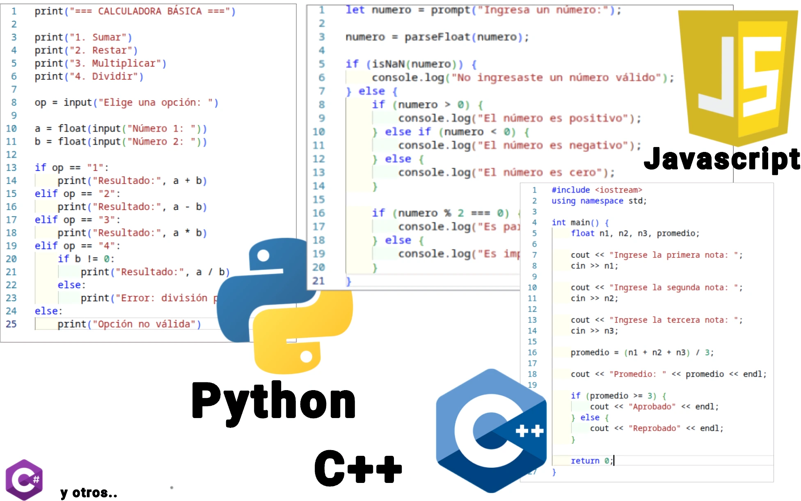
En Programación darás tus primeros pasos en el desarrollo de software real. Usarás Python y Java para crear programas funcionales, aplicando la lógica que aprendiste en materias anteriores.
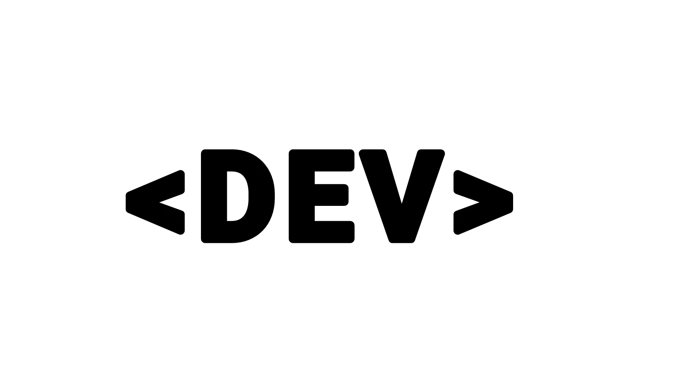
Forma al estudiante en el diseño y desarrollo de contenido digital e interfaces web, combinando principios de diseño visual con tecnologías de desarrollo front-end. El egresado es capaz de crear y publicar sitios web funcionales y materiales digitales para comunicación institucional.
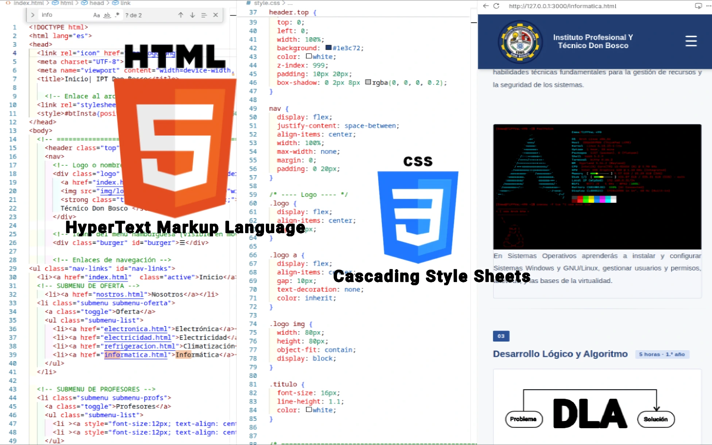
En Multimedia y Desarrollo Web aprenderás a construir sitios web desde cero con HTML, CSS y JavaScript, y a crear material digital atractivo con herramientas de diseño gráfico profesionales.
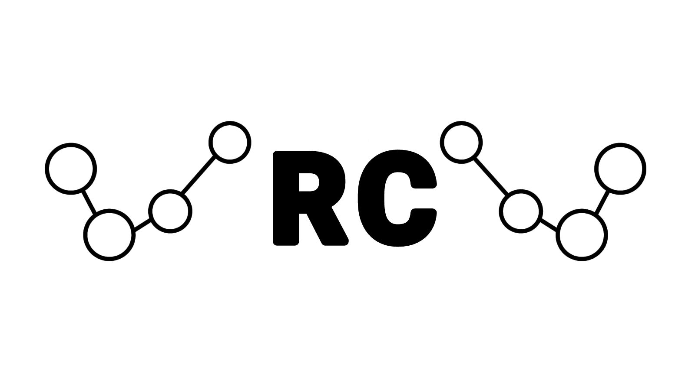
Proporciona los fundamentos teóricos y prácticos para comprender, diseñar y configurar redes de área local (LAN), así como los conceptos básicos de conectividad a Internet. Es la asignatura con mayor carga horaria del plan de estudios, lo que refleja su importancia central en el perfil del egresado.
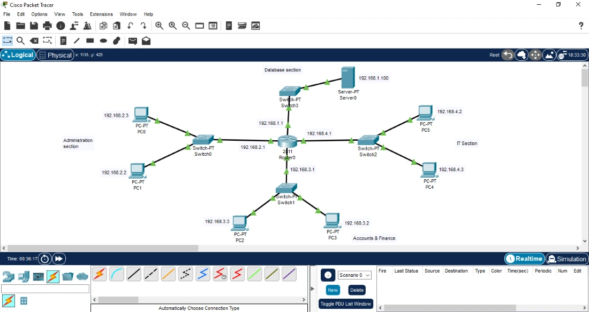
Redes de Computadoras es la materia con más horas del bachillerato. Aprenderás a diseñar y configurar redes LAN, trabajar con equipos reales y simular topologías de red con Cisco Packet Tracer.
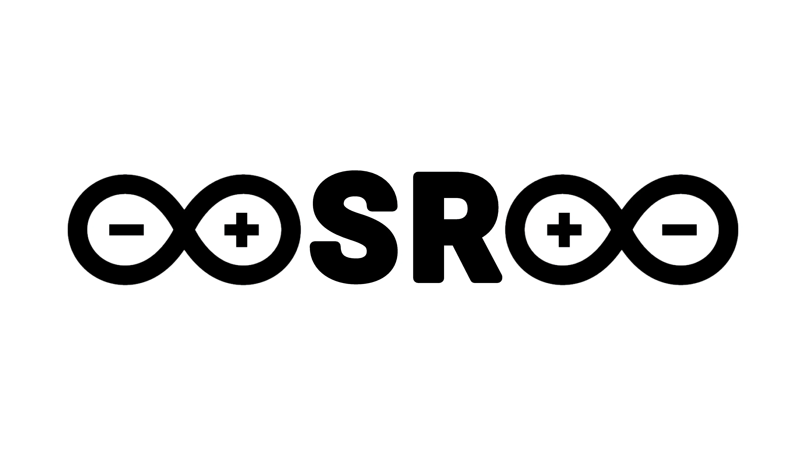
Introduce al estudiante en los principios de la robótica y la automatización mediante el diseño, ensamblaje y programación básica de sistemas robóticos aplicados a situaciones reales. Este taller fomenta la creatividad, el pensamiento computacional y el trabajo colaborativo a través de proyectos prácticos.
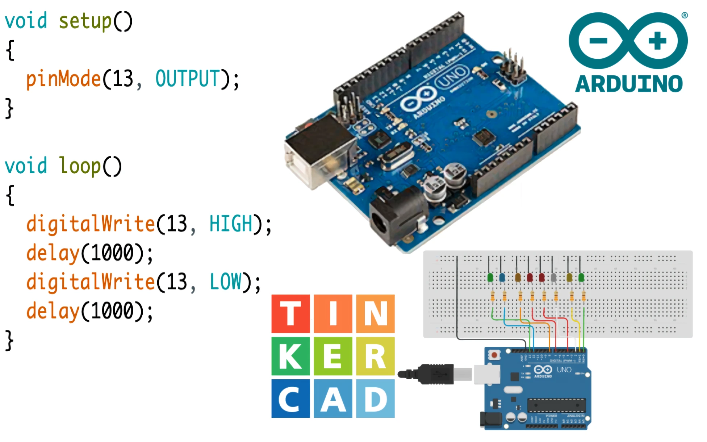
El Taller de Robótica te permitirá construir y programar tus propios robots con Arduino y Lego Mindstorms. Una materia práctica y creativa donde la tecnología cobra vida en proyectos reales.
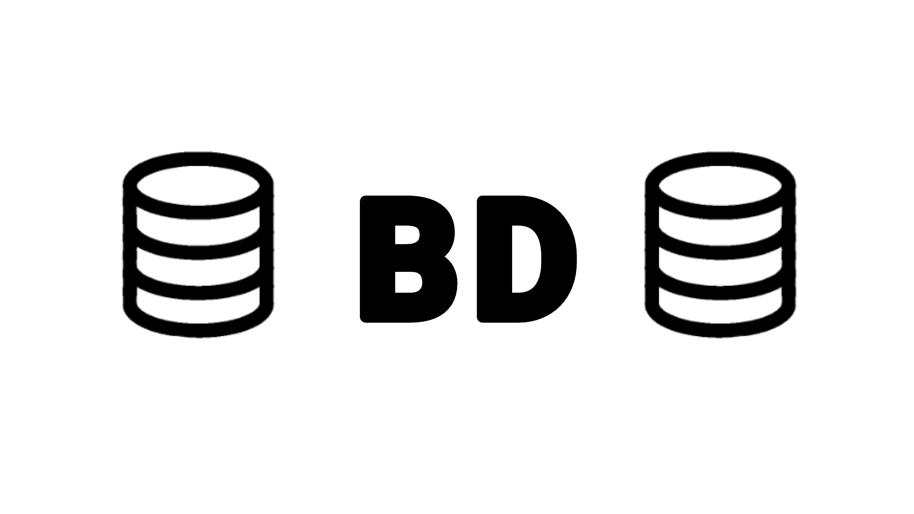
Capacita al estudiante para diseñar, crear y administrar bases de datos relacionales, integrándolas con aplicaciones para el almacenamiento y consulta eficiente de información. Se hace énfasis en el modelado de datos y el uso del lenguaje estándar de consultas SQL.
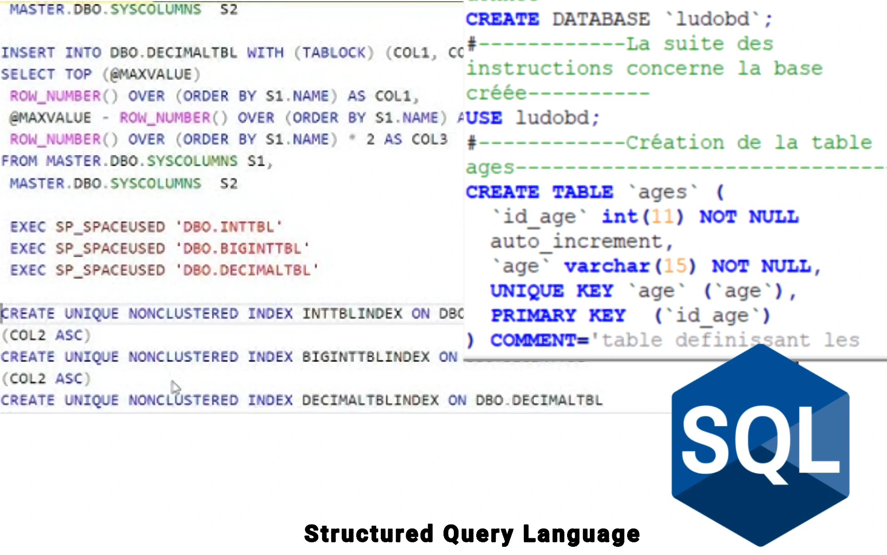
En Bases de Datos aprenderás a diseñar y consultar bases de datos relacionales usando SQL. Integrarás estos conocimientos con aplicaciones para gestionar información de forma eficiente y organizada.
El siguiente cuadro refleja la distribución de horas por asignatura técnica a lo largo de los tres años del bachillerato.
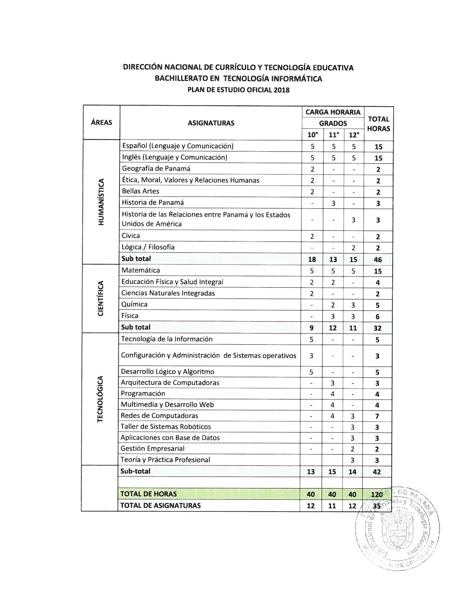